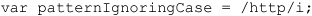
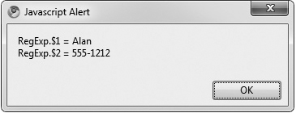
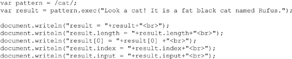
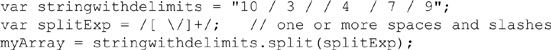
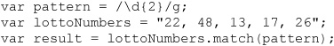
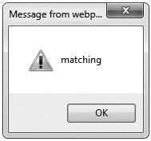

Manipulation of textual data is a common task in JavaScript. Checking data entered into forms, creating and parsing cookies, constructing and modifying URLs, and changing the content of Web pages can all involve complicated operations on strings. Text matching and manipulation in JavaScript is provided by the String object, as discussed in Chapter 7, and regular expressions, a feature enabling you to specify patterns of characters and sets of strings without listing them explicitly.
Regular expressions, sometimes referred to as regexps or regexes for brevity, have also long been a part of many operating systems. If you have ever used the dir command in Windows or DOS or the ls command in UNIX, chances are you’ve used “wildcard” characters such as * or ?. These are primitive regular expressions! Readers who have worked in more depth with regular expressions in other programming languages, especially with Perl, will find JavaScript regular expressions very familiar.
This chapter is an introduction to JavaScript’s RegExp object. It covers basic syntax, common tasks, and more advanced applications of regular expressions in your scripts.
Consider the task of validating a phone number entered into a form on a Web page. The goal is to verify that the data entered has the proper format before permitting it to be submitted to the server for processing. If you’re only interested in validating North American phone numbers of the form NNN-NNN-NNNN, where N s are digits, you might write code like this:
This is a lot of code for such a seemingly simple task. The code is far from elegant, and just imagine how much more complicated it would have to be if you wanted to validate other formats—for example, phone numbers with extensions, international numbers, and numbers with the dashes or area code omitted.
Regular expressions simplify tasks like this considerably by allowing programmers to specify a pattern against which a string is “matched.” For example, here we rewrite the previous phone number check with a regular expression found in the pattern variable:
Clearly, if the previous example is any indication of how regular expressions can be mastered, it may free us from writing complicated and error-prone text-matching code like we were before. However, that isn’t all regexes can do, as they are not just limited to determining whether a string matches a particular pattern; if the string does match, it is possible to locate, extract, or even replace the matching portions. This vastly simplifies the recognition and extraction of structured data such as URLs, e-mail addresses, phone numbers, and cookies. Just about any type of string data with a predictable format can be operated on with regular expressions.
Regular expressions were introduced in JavaScript 1.2 and JScript 3.0 with the RegExp object, so much of their functionality is available through RegExp methods. However, many methods of the String object take regular expressions as arguments, so you will see regular expressions commonly used in both contexts.
Regular expressions are most often created using their literal syntax, in which the characters that make up the pattern are surrounded by slashes (/ and /) followed by some modifiers:
For example, to create a regular expression that will match any string containing “http”, you might write the following:
The way you read this pattern is an “h” followed by a “t”, followed by a “t”, followed by a “p”. Any string containing “http” matches this pattern.
Modifiers altering the interpretation of the pattern can be given immediately following the second slash. For example, to specify that the pattern is case-insensitive, the i flag is used:

This declaration creates a pattern that will match strings containing “http” as well as “HTTP” or “HttP”. The common flags used with regular expressions are shown in Table 8-1 and will be illustrated in examples throughout the chapter. Don’t worry about any but i for the time being.
Table 8-1 Flags Altering the Interpretation of a Regular Expression
NOTE Some browsers, notably Firefox, also support a modifier y, which is used to make the matching process start from the lastIndex property value. This modifier allows match at start (^) patterns to be used a bit more flexibly.
Regular expressions can also be declared using the RegExp() constructor. The first argument to the constructor is a string containing the desired pattern. The second argument is optional and contains any special flags for that expression. The two previous examples could equivalently be declared as follows:
The constructor syntax is most commonly used when the pattern to match against is not determined until runtime. You might allow the user to enter a regular expression and then pass the string containing that expression to the RegExp() constructor.
The most basic method provided by the RegExp object is test(). This method returns a Boolean indicating whether the string given as its argument matches the pattern. For example, we could test
which displays false because pattern matches only strings containing “http”, or we could test using the case-insensitive pattern, which returns true because it matches for strings containing “http” while ignoring case:
We don’t have to declare the patterns using object style; we can use simple RegExp literals, like so:
and use the test() method as before. We can also use the regular expressions as literals in expressions; for example, the following would show an alert dialog saying true:
A full example of simple RegExp matching and its output are shown here:
ONLINE http://www.javascriptref.com/3ed/ch8/simpleregexp.html
One subtle thing to note is that if you take two regular expressions and compare them, even if they are the same, they will not compare as such. Being that regular expression are reference types (objects), this form of comparison semantics should be somewhat expected. If you have some desire to compare regular expression patterns, you can use the source property of the instance or the toString() result for the patterns. The small code fragment here illustrates this minor point that may confuse some coders:
The example patterns presented so far merely check for the presence of a particular substring; they exhibit none of the powerful capabilities to which we have alluded. Regular expressions use special character sequences that enable the programmer to create more complicated patterns. For example, special characters provide a way to indicate that a certain character or set of characters should be repeated a certain number of times or that the string must not contain a certain character.
The first set of special characters can be thought of as positional indicators, characters that mandate the required position of the pattern in the strings against which it will be matched. These characters are ^ and $, indicating the beginning and end of the string, respectively. For example,
matches only those strings beginning with “http”. The following alerts false:
The $ character causes the opposite behavior:
This pattern matches only those strings ending with “http”. You can use both positional indicators in concert to ensure an exact match to the desired pattern:
This regular expression is read as an “h” at the beginning of the string followed by “tt”, followed by a “p” and the end of the string. This pattern matches only the string “http”.
You need to be very careful to employ positional indicators properly when doing matches; otherwise, the regular expression may match strings that are not expected.
Given the syntax of regular expression literals demonstrated so far, one might wonder how to specify a string that includes slashes, such as "http://www.w3.org/". The answer is that, as with strings, regular expressions use escape codes to indicate characters having special meaning. Escape codes are specified using a backslash character (\). The escape codes used in regular expressions are a superset of those used in strings. (Regular expressions contain far more characters with special meaning, such as ^ and $.) These escape codes are listed in Table 8-2. You don’t have to memorize them all; their use will become clear as we explore more features of regular expressions.
Table 8-2 Regular Expression Escape Codes

Using the appropriate escape code, we can now define a regular expression that matches "http://www.w3.org/" (and any other string containing it):
Notice in the example that, because / has special meaning in regular expression literals (it means the beginning or end of the pattern), all the forward slashes (/) in the pattern are replaced with their escaped equivalent, \/.
The important thing to remember is that whenever you want to include a character in a pattern that has a special regular expression meaning, you must use its escape code instead.
Regular expression repetition quantifiers allow you to specify the number of times a particular item in the expression can or must be repeated. For now, consider that by “particular item” we mean “previous character.” The distinction will become clear later in the chapter. As an example of a repetition quantifier, * (the asterisk) indicates that the previous item may occur zero or more times. Any sequence of zero or more repetitions of the previous item can be present in the strings the pattern will match. For example, read the * here as “repeated zero or more times”:
Doing so, we read this pattern as matching any string containing an “a” that is followed immediately by “b” repeated zero or more times, followed immediately by a “c”. All the following strings will match this expression:
• ac
• abc
• abbbbbbbbbbbbbbbbbbbbbbbbbbbc
• The letters abc begin the alphabet
Similarly, + specifies that the previous character must be repeated one or more times. The following declaration is read as an “a” followed by a “b” repeated one or more times, followed by a “c”:
Keeping this pattern in mind, you can see that it matches all the following strings:
• abc
• abbbbbc
• The letters abc begin the alphabet
Conversely, the pattern does not match the string “ac” because it does not contain at least one “b” between an “a” and a “c”.
The ? quantifier indicates that the previous item may occur zero times or one time, but no more. For example, read this pattern as an “a” followed by zero or one “b”, followed by a “c”:
It matches “ac” and “abc”, but not “abbc”. The ? essentially denotes that the preceding item is optional.
The repetition quantifiers haven’t provided any way so far to specify that a particular character is to be repeated some exact number of times. Curly braces ({ }) are used to indicate the number of repetitions allowed for the preceding token (character). For example,
specifies a pattern consisting of an “a” followed by exactly five “b” characters, and then the letter “c”. Of course, this particular expression also could have been written as
but this “long” version would be very cumbersome if you wanted to match, say, a character repeated 25 times.
Using the curly braces, it is possible to indicate precisely that the number of repetitions falls within a specific range. To do so, list inside the curly braces the fewest number of repetitions allowed, followed by a comma and the maximum allowed. For example,
creates a regular expression matching a single “a” followed by between five and seven (inclusive) “b” characters, and then the letter “c”.
Omitting the maximum amount from within the curly braces (but still including the comma) specifies a minimum number of repetitions. For example,
creates an expression matching an “a” followed by three or more letter “b” characters, followed by a “c”.
The full list of repetition quantifiers is summarized in Table 8-3.
Table 8-3 Repetition Quantifiers
Now we’re really starting to discover the power of regular expressions, and there is still much more to cover. Don’t give up just yet—while learning regular expressions can be a challenge, it will pay off in the long run in the time saved by not having to write and debug complex code.
Notice how Table 8-3 indicates that the repetition quantifiers match the “previous item” a certain number of times. In the examples seen so far, the “previous item” has been a single character. However, JavaScript regular expressions let you easily group characters together as a single unit, much the way statements can be grouped together in a block using curly braces. The simplest way to group characters in a regular expression is to use parentheses. Any characters surrounded by parentheses are considered a unit with respect to the special regular expression operators. For example,
is read as “a” followed by “bc” repeated one or more times. The parentheses group the “b” and “c” together with respect to the +. This pattern matches any string containing an “a” followed immediately by one or more repetitions of “bc”.
Here is another example:
This pattern matches strings containing “very” repeated three, four, or five times followed by a space and the word “hot”.
Sometimes it is necessary to match any character from a group of possibilities. For example, to match phone numbers, the group of characters might be digits, or if you wished to validate a country name, the group of valid characters might be alphabetic.
JavaScript allows you to define character classes by including the possible characters between square brackets ([ ]). Any character from the class can be matched in the string, and the class is considered a single unit like parenthesized groups. Consider the following pattern:
In general, a […] class is read as “any character in the group,” so the class [pbm]ill is read as “p” or “b” or “m” followed by “ill”. This pattern matches “pill”, “billiards”, and “paper mill”, but not “chill”.
Consider another example:
The [123456789] class is a class containing all digits, and the + repetition quantifier is applied to it. As a result, this pattern matches any string containing one or more digits. This format looks like it could get very messy if you desired to set a large group of allowed characters, but luckily JavaScript allows you to use a dash (–) to indicate a range of values:
This regular expression is the same as the previous example with all the digits, just written more compactly.
Any time you use the range operator, you specify a range of valid ASCII values. So, for example, you might do this to match any lowercase alphabetic character:
or this to match any alphanumeric character:
JavaScript allows you to place all the valid characters in a contiguous sequence in a character class, as in the last example. It interprets such a class correctly.
Character classes finally give us an easy way to construct our phone number validation pattern. We could rewrite our function as follows:
This pattern matches strings containing any character from the class of digits 0 through 9 repeated three times, followed by a dash, followed by another three digits, a dash, and a final four digits. Notice how our code to validate phone numbers presented at the start of the chapter went from about 20 lines without regular expressions to only four when using them! We can test that this function works:
The output is shown here:
ONLINE http://www.javascriptref.com/3ed/ch8/regexepermissive.html
The truth is that while it appears to work just fine, our isPhoneNumber() function has a subtle flaw commonly overlooked by those new to regular expressions: it is too permissive. Consider the following example:
The result is
Since we didn’t specify any positional information in our pattern, the regular expression matches any strings containing it, even if the beginning and end of a string has data that doesn’t match. To correct this flaw, we use the $ and ^ specifiers:
Now it will only return true if there are no spurious characters preceding or following the phone number.
ONLINE http://www.javascriptref.com/3ed/ch8/regexestrict.html
As another example of the application of regular expressions, we create a pattern to match a case-insensitive username beginning with an alphabetic character, followed by zero or more alphanumeric characters as well as underscores and dashes. The following regular expression defines such a pattern:
This will match, for example, “m”, “m10-120”, “abracadabra”, and “abra_cadabra”, but not “_user” or “10abc”. Note how the dash was included in the character class last to prevent it from being interpreted as the range operator.
Square brackets can also be used when describing “negative” character classes, namely classes that specify which characters cannot be present. A negative class is specified by placing a carat (^) at the beginning of the class. For example,
will match any sequence of one or more nonalphabetic characters, for instance “314”, “!!%&^”, or “__0”.
Negative character classes are very useful when matching or parsing fields delimited with a certain value. Sometimes there is no elegant alternative. For example, it is not straightforward to write a clean regular expression to check that a string contains five comma-separated strings without using a negative character class, but it is simple using negative character classes, as shown here:
Read this as one or more characters that isn’t a comma, followed by a comma, followed by one or more characters that isn’t a comma, and so on. You could even write this pattern more concisely:
You can test that these patterns work, as shown here:
This is an important lesson: if you’re having trouble coming up with a regular expression for a particular task, try writing an expression using negative character classes first. It may often point the way toward an even cleaner solution.
Commonly used character classes have shorthand escape codes. A particularly useful notation is the period, which matches any character except a newline. For instance, given this pattern:
it would match “abcx7d” or “abc_-d” or “abc$$d”, and on and on.
Other common classes are \s, any whitespace character; \S, any non-whitespace character; \w, any word character; \W, any nonword character; \d, any digit; and \D, any nondigit. (Notice the pattern: the uppercase version of shorthand is the opposite of the lowercase.) The complete list of character classes is given in Table 8-4.
Table 8-4 Regular Expression Character Classes
We can use these shorthand forms to write an even more concise version of our isPhoneNumber() function:
We’ve replaced each [0-9] character class with its shorthand, \d.
The final major tool necessary to define useful patterns is |, which indicates the logical OR of several items. For example, to match a string that begins with “ftp”, “http”, or “https”, you might write this:
Unlike repetition quantifiers that only apply to the previous item, alternation separates complete patterns. If we had written the preceding example as
the pattern would have matched a string beginning with “http” or a string containing “ftp” or a string containing “https”. The initial ^ would’ve been included only in the first alternative pattern. To further illustrate, consider the following regular expression:
Since each | indicates a new pattern, this matches a string containing “James”, a string containing “Jim”, or a string containing “Charlie Brown”. It does not match a string containing “James Brown”, as you might have thought. Parenthesizing alternatives limits the effect of the | to the parenthesized items, so you see the following pattern
which matches “James Brown”, “Jim Brown”, and “Charlie Brown”.
The tools described so far work together to permit the creation of useful regular expressions. It is important to be comfortable interpreting the meaning of regular expressions before delving further into how they are used. Table 8-5 provides some practice examples along with strings they do and do not match. You should work through each example before proceeding.
Table 8-5 Some Regular Expression Examples
Now that we’ve covered how to form regular expressions, it is time to look at how to use them. We do so by discussing the properties and methods of the RegExp and String objects that can be used to test and parse strings. Recall that regular expressions created with the literal syntax in the previous section are in fact RegExp objects. In this section, we favor the object syntax so the reader will be familiar with both.
The simplest RegExp method, which we have already seen in this chapter numerous times, is test(). This method returns a Boolean value indicating whether the given string argument matches the regular expression. Here we construct a regular expression and then use it to test against two strings:
The RegExp object provides an easy way to extract pieces of a string that match parts of your patterns. This is accomplished by grouping (placing parentheses around) the portions of the pattern you wish to extract. For example, suppose you wished to extract first names and phone numbers from strings that look like this,
Firstname Lastname NNN-NNNN
where N s are the digits of a phone number. You could use the following regular expression, grouping the part that is intended to match the first name as well as the part intended to match the phone number:
This pattern is read as one or more word characters, followed by a space and another sequence of one or more word characters, followed by another space and then an eight-character string composed of digits and dashes.
When this pattern is applied to a string, the parentheses induce subexpressions. When a match is successful, these parenthesized subexpressions can be referred to individually by using static properties $1 to $9 of the RegExp class object. To continue our example:
Since the pattern contained parentheses that created two subexpressions, \w+ and [\d-] {8}, we can reference the two substrings they match, “Alan” and “555-1212”, individually. Substrings accessed in this manner are numbered from left to right, beginning with $1 and ending typically with $9. For example,
displays the alert shown here. Notice the use of the RegExp class object to access the subexpression components, not the RegExp instance or pattern we created.

NOTE According to older ECMA specifications, you should be able to reference more than nine subexpressions. In fact, up to 99 should be allowed using identifiers such as $10, $11, and so on. However, generally no more than nine are supported. This syntax also is deprecated in many browsers but is still commonly used and is unlikely to be disabled.
A rather infrequently used method is compile(), which replaces an existing regular expression with a new one. Under Firefox browsers it is deprecated, though it is generally still supported. This method takes the same arguments as the RegExp() constructor (a string containing the pattern and an optional string containing the flags) and can be used to create a new expression by discarding an old one:
A possible use of this function is for efficiency. Regular expressions declared with the RegExp() constructor are “compiled” (turned into string matching routines by the interpreter) each time they are used, and this can be a time-consuming process, particularly if the pattern is complicated. Explicitly calling compile() saves the recompilation overhead at each use by compiling a regular expression once, ahead of time.
The RegExp object also provides a method called exec(). This method is used when you’d like to test whether a given string matches a pattern and would additionally like more information about the match, for example, the offset in the string at which the pattern first appears. You can also repeatedly apply this method to a string in order to step through the portions of the string that match, one by one.
The exec() method accepts a string to match against, and it can be written in shorthand by directly invoking the name of the regular expression as a function. For example, the two invocations in the following example are equivalent:
The exec() method returns an array with a variety of properties. The [0] position of the array will contain the last matched characters, and the [1],…[n] positions will show any parenthesized substring matches similar to the $1…$9 concepts mentioned previously. Also, as an array, you may query the length of the array. The input property will show the original input string, while the index property will show the character index (starting from 0) at which the matching portion of the string begins. This simple example shows this:

The array returned may have more than one element if subexpressions are used. For example, the following script has a set of three parenthesized subexpressions that are parsed out in the array separately:
Here is the result:
ONLINE http://www.javascriptref.com/3ed/ch8/execmethod.html
Sometimes you might wish to extract not just the first occurrence of a pattern in a string, but each occurrence of it. Adding the global flag (g) to a regular expression indicates the intent to search for every occurrence (that is, globally) instead of just the first.
The way the global flag is interpreted by RegExp and by String is a bit subtle. In RegExp, it’s used to perform a global search incrementally—that is, by parsing out each successive occurrence of the pattern one at a time. In String, it is used to perform a global search all at once, which means by parsing out all occurrences of the pattern in one single function call. We’ll cover the use of the global flag with String methods in the following section.
To demonstrate the difference between a regular expression with the global flag set and one without, consider the following simple example:
As you can see in the following capture, when the global flag is set, the exec() starts searching where the previous match ended:
Without the global flag, exec() always returns the first matching portion of the string.
ONLINE http://www.javascriptref.com/3ed/ch8/execglobal.html
How does global matching work? The invocation of exec() sets the lastIndex property of the RegExp instance object to point to the character immediately following the substring that was most recently matched. Subsequent calls to the exec() method begin their search from the offset lastIndex in the string. If no match is found, lastIndex is set to zero.
NOTE Some implementations of JavaScript will have the lastIndex on the returned array as well. This is nonstandard and is not available in many modern browsers. Further, some browsers may update lastIndex regardless of the global flag (g) being set.
We’ll demonstrate the use of lastIndex with a simple loop using exec() to work through each substring matching a regular expression and obtaining complete information about each match. Here we will do a simple match to see all the space-separated words in the given string:
ONLINE http://www.javascriptref.com/3ed/ch8/execloop.html
The result of the previous example (when used within a <pre> tag for formatting) is shown in Figure 8-1. Notice how lastIndex is set appropriately, as we discussed.
Figure 8-1 Execution of RegExp word-parsing loop using exec()
One caveat when using the exec() method: If you stop a search before finding the last match, you need to manually set the lastIndex property of the regular expression to zero. If you do not, the next time you use that regular expression, it will automatically start matching at offset lastIndex rather than at the beginning of the string.
NOTE The test() method obeys lastIndex as well, so it can be used to incrementally search a string in the same manner as exec(). Think of test() as a simplified, Boolean version of exec().
Examining the internals of regular expression instance objects, as well as the static (class) properties of the RegExp object, can be helpful when performing complex matching tasks and during debugging. The instance properties of RegExp objects are listed in Table 8-6 and, with a few exceptions, should be familiar to the reader by this point.
NOTE The Firefox browser supports a sticky instance property to indicate if the pattern search is sticky or not per the presence of the y character modifier.
Table 8-6 Instance Properties of RegExp Objects
An example showing the properties in Table 8-6 in action is shown here:
ONLINE http://www.javascriptref.com/3ed/ch8/regexpinstanceprops.html
Traditionally, the RegExp object itself supported useful static properties, but given their future status, you should be cautious. These properties are listed in Table 8-7 and come in two forms. The alternate form uses a dollar sign and a special character and may be recognized by those who are already intimately familiar with regular expressions. A downside to the alternate form is that it has to be accessed in an associative array fashion. Note that using this form will probably confuse those readers unfamiliar with languages such as Perl, so it is definitely best to just stay away from it.
Table 8-7 Properties of the RegExpConstructorObject

CAUTION While the features in Table 8-7 are widely supported, many browsers indicate this syntax to be deprecated, and some may not support them. Note that ECMAScript 5 does not include them, so they should certainly be avoided in strict mode.
Figure 8-2 shows an example of the properties in Table 8-7 in two browsers. You’ll note some small differences in support. As mentioned before, this syntax is not suggested but is presented here for completeness.
Figure 8-2 Example of browser differences with RegExp object properties
ONLINE http://www.javascriptref.com/3ed/ch8/regexpglobalprops.html
One interesting aspect of the static RegExp class properties is that they are global and therefore change every time you use a regular expression, whether with String or RegExp methods. For this reason, they are the exception to the rule that JavaScript is statically scoped. These properties are dynamically scoped —that is, changes are reflected in the RegExp object in the context of the calling function, rather than in the enclosing context of the source code that is invoked. For example, JavaScript in a frame that calls a function using regular expressions in a different frame will update the static RegExp properties in the calling frame, not the frame in which the called function is found. This rarely poses a problem, but it is something you should keep in mind if you are relying on static properties in a framed environment. We can see why this approach should go away— it makes JavaScript more confusing rather than less.
The String object provides four methods that utilize regular expressions. They perform similar, and in some cases more powerful, tasks than the RegExp object itself. Whereas the RegExp methods are geared toward matching and extracting substrings, the String methods use regular expressions to modify or chop strings up, in addition to matching and extracting.
The simplest regular expression related String method is search(), which takes a regular expression argument and returns the index of the character at which the first matching substring begins. If no substring matching the pattern is found, –1 is returned. Consider the following two examples. This code
produces the following result, showing what character position was matched for the provided regular expression:
while this code
produces this result:
The second statement searches for a digit and returns –1 because no numeric character is found in the tested string.
The second method provided by String is also fairly simple. The split() method splits (for lack of a better word) a string into substrings and returns them in an array. It accepts a string or regular expression argument containing the delimiter at which the string will be broken. For example,

places 10, 3, 4, 7, and 9 into the first five indices of the array called myArray. Of course, you could do this much more tersely:

Using split() with a regular expression argument (rather than a string argument) allows you the flexibility of ignoring multiple whitespace or delimiter characters. Because regular expressions are greedy (see the section, “Advanced Regular Expressions,” later in this chapter), the regular expression “eats up” as many delimiter characters as it can. If the string “ /” had been used as a delimiter instead of a regular expression, we would have ended up with empty elements in our array.
The replace() method returns the string that results when you replace text matching the method’s first argument (a regular expression) with the text of the second argument (a string). If the global (g) flag is not set in the regular expression declaration, this method replaces only the first occurrence of the pattern. For example,
produces the following output:
Including the g flag will cause the interpreter to perform a global replace, finding and replacing every matching substring. For example,
yields this result:
Recall that parenthesized subexpressions can be referred to by number using the RegExp class object (for example, RegExp.$1). You can use this capability in replace() to reference certain portions of a string. The substrings matched by parenthesized subexpressions are referred to in the replacement string with a dollar sign ($), followed by the number of the desired subexpression. For example, the following inserts dashes into a hypothetical social security number:
The result is shown here:
This technique is called backreferencing and is very useful for formatting data according to your needs. How many times have you entered a phone number into a Web site and been told that you need to include dashes (or not include them)? Since it’s just as easy to fix the problem using regular expressions and backreferencing as it is to detect it, consider using this technique in order to accommodate users who deviate slightly from expected patterns. For example, the following script does some basic normalization on phone numbers:

The final method provided by String objects is match(). This method takes a regular expression as an argument and returns an array containing the results of the match. If the given regular expression has the global (g) flag, the array returned contains the results of each substring matched. For example,

places 22 in result[0], 48 in result[1], and so on, up to 26 in result[4].
Using match() with the global flag is a great way to quickly parse strings of a known format.
The behavior of match() when the expression does not have the global flag is nearly identical to RegExp.exec() with the global flag set. The match() method places the character position at which the first match begins in an instance property index of the array that is returned. The instance property called input is also added and contains the entire original string. The contents of the entire matching substring are placed in the first element (index zero) of the array. The rest of the array elements are filled in with the matching subexpressions, with index n holding the value of $n. For example,
produces this result shown here:
As you can see, all three subexpressions were matched and placed in the array. The entire match was placed in the first element, and the instance properties index and input reflect the original string (remember, string offsets are enumerated beginning with zero, just like arrays). Note that if match() does not find a match, it returns null.
There are a few other regular expression tools that are worth spending a little more time on in case you need to perform more advanced string matching.
The multiline flag (m) causes ^ and $ to match the beginning and end of a line, in addition to the beginning and end of a string. You could use this flag to parse text such as the following,
which uses the String method match() to break the text into individual lines and place them in the array lines. (The global flag is set so that, as previously discussed, match() will find all occurrences of the pattern, not just the first.) The output of this example is shown here:
JavaScript also provides more flexible syntax for parenthesized expressions. Using the syntax (?:) specifies that the parenthesized expression should not be made available for backreferencing. These are referred to as noncapturing parentheses. For example,
shows the following result:
You can see that the first subexpression (one or more “a” characters) was not “captured” (made available) by the RegExp object.
JavaScript allows you to specify that a portion of a regular expression matches only if it is or is not followed by a particular subexpression. The (?=) syntax specifies a positive lookahead; it only matches the previous item if the item is followed immediately by the expression contained in (?=). The lookahead expression is not included in the match. For example, in the following, pattern matches only a digit that is followed by a period and one or more digits:
It matches 3.1 and 3.14159, but not 3.or.3.
Negative lookahead is achieved with the (?!) syntax, which behaves like (?=). It matches the previous item only if the expression contained in (?!) does not immediately follow. For example, in the following, pattern matches a string containing a digit that is not followed by a period and another digit:
It will match 3 but not 3.1 or 3.14. The negative lookahead expression is also not returned on a match.
One particularly challenging aspect facing those new to regular expressions is greedy matching. Often termed aggressive or maximal matching, this term refers to the fact that the interpreter will always try to match as many characters as possible for a particular item. A simple way to think about this is that JavaScript will continue matching characters if at all possible. For example, you might think that the pattern would match the word “matching”:
but the actual output is shown in the following illustration. JavaScript matches the longest substring it can, in this case from the initial “ma” in matching all the way to the final “ing” in “daunting.”
You can force a quantifier (*, +, ?, {m}, {m,}, or {m,n}) to be nongreedy by following it with a question mark. Doing so forces the expression to match the minimum number of characters rather than the maximum. To repeat our previous example, but this time with minimal matching, we’d use the following:
The output shows that the interpreter found the first shortest matching pattern in the string:

As we have seen throughout this chapter, regular expressions certainly wield a lot of power as well as complexity. All JavaScript programmers really should aim to master them, as they can aid in common tasks such as form validation. However, before rushing out and adding regular expressions to every script, programmers should consider some of their usage challenges.
Regular expressions derive their name from the fact that the strings they recognize are (in a formal computer science sense) “regular.” This implies that certain kinds of strings will be very hard, if not impossible, to recognize with regular expressions. Luckily, these strings are not often encountered and usually arise only in parsing things like source code or natural language. If you can’t come up with a regular expression for a particular task, chances are that an expert could. However, there is a slight chance that what you want to do is actually impossible, so it never hurts to ask someone more knowledgeable than yourself.
Another issue to keep in mind is that some regular expressions can have exponential complexity. In plain words, this means that it is possible to craft regular expressions that take a really, really long time to test strings against. This usually happens when using the alternative operation (|) to give many complex options. If regular expressions are slowing down your script, consider simplifying them.
A common gotcha when performing form validation with regular expressions is validating e-mail addresses. Most people aren’t aware of the variety of forms e-mail addresses can take. Valid e-mail addresses can contain punctuation characters such as ! and +, and they can employ IP addresses instead of domain names (such as root@127.0.0.1). You’ll need to do a bit of research and some experimentation to ensure that the regular expressions you create will be robust enough to match the types of strings you’re interested in. There are two lessons here. First, when performing form validation, always err on the side of being too permissive rather than too restrictive. Second, educate yourself on the formats the data you’re validating can take. For example, if you’re validating phone numbers, be sure to research common formats for phone numbers in other countries.
And finally, it is important to remember that even the best-crafted pattern cannot test for semantic validity. For example, you might be able to verify that a credit card number has the proper format, but without more complicated server-side functionality, your script has no way to check whether the card is truly valid. Still, associating a syntax checker with forms to look at user-entered data such as credit card numbers is a convenient way to catch common errors before submission to the server.
JavaScript regular expressions provide powerful matching and manipulation of string data based on patterns. Regular expressions can be created using literal syntax with \pattern\ format or the RegExp() constructor and are used in String methods, such as match(), replace(), search(), and split(). Regular expression objects also provide test(), match(), and exec() methods for basic invocation of an expression on a string. Regular expressions themselves are composed of strings of characters along with special escape codes, character classes, and repetition quantifiers. The special escape codes provide the means to include otherwise problematic characters, such as newlines and those characters that have a special meaning in regular expressions. Character classes provide a way to specify a class or range of characters that a string must or must not draw from. Repetition quantifiers allow you to specify the number of times a particular expression must be repeated in the string in order to match. Regular expressions are at times hard to get right, so they should be crafted with care. Properly used, they provide a very powerful way to recognize, replace, and extract patterns of characters from strings.